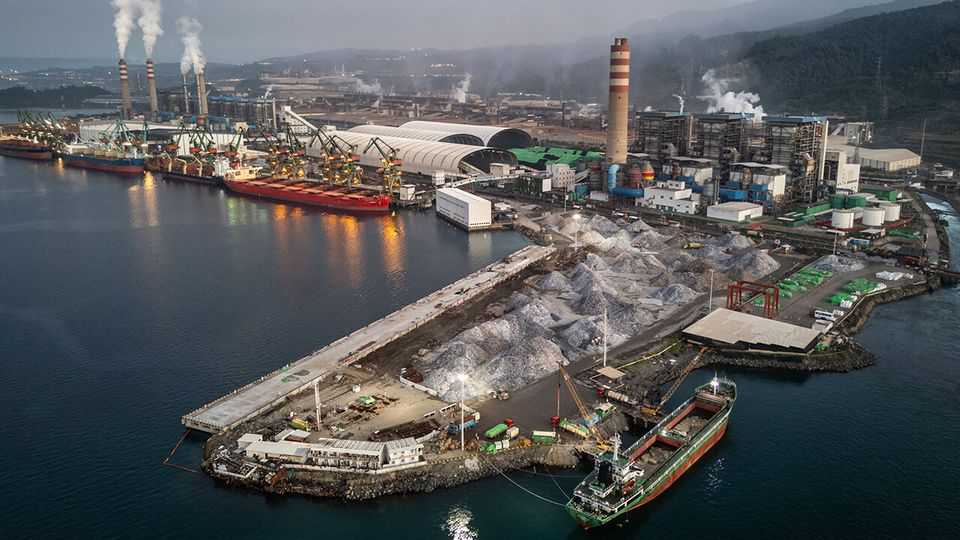
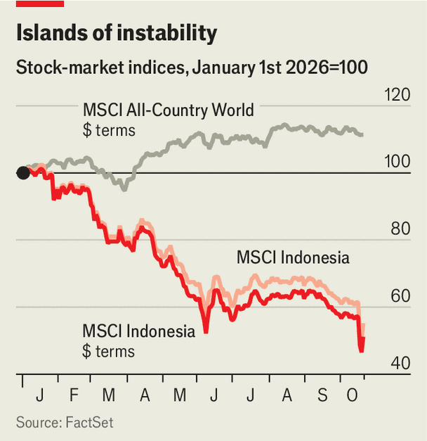

Multinational businesses are losing confidence in Indonesia
Its bountiful resources and vast population are attractive, but its government is a nightmare

Oct 22nd 2026
Ukraine and Palestine are no one’s idea of attractive markets. Yet that is the company Indonesia may soon keep. On October 15th MSCI, an index provider, threatened to reclassify it as a “standalone” market, two notches below its current status as an ”emerging” one. MSCI blamed a stock market plagued by opaque listings and suspected pump-and-dump schemes. Investors have been fleeing. In dollar terms Indonesian stocks have lost half their value in 2026, rendering it the world’s worst-performing market (see chart).

The sorry state of the bourse is emblematic of the deeper decay in Indonesia’s business environment during the presidency of Prabowo Subianto, under whom cronyism has grown rampant and the government has become increasingly meddlesome. His reign has unsettled multinational businesses, many of which covet Indonesia’s bountiful natural resources and vast population of consumers.
Earlier this year the China Chamber of Commerce in Indonesia, a business association, circulated a letter complaining that its members faced “excessively stringent regulation, over-enforcement, and even corruption and extortion” by authorities. Their plight is not unique. “If you swapped out the letterhead, it could have been written by us,” says someone from a similar Western association in Indonesia. If Indonesia’s president is not careful, the ranks of multinationals scaling back their presence in his country will grow.
Part of the problem is Mr Prabowo’s economic nationalism. It represents a reversal of the progress that has slowly been made in Indonesia since the Asian financial crisis of 1997-98. Mr Prabowo’s predecessor, Joko Widodo, elevated a business-minded coterie of fixers, including Luhut Pandjaitan, a coal baron. They let foreign businesses cut through Indonesia’s disorganised, corrupt bureaucracy, luring in firms such as Tsingshan, a Chinese miner, and LG Energy Solution (LGES), a South Korean battery-maker. Few doubted that Mr Widodo’s inner circle enriched themselves. But for foreign businesses, they made Indonesia a simpler place to operate.
Mr Prabowo, by contrast, rails against “irresponsible powers” that are “stealing” Indonesia’s resources, and has installed a new cohort of cronies with little interest in economic strategy. “No single person is playing the Luhut role in the Prabowo administration,” says Brasukra Sudjana of Vriens & Partners, a consultancy.
That has damaged confidence among multinationals. In the final quarter of 2024, during which Mr Prabowo took power, inflows of new foreign direct investment hit $16bn, more than double the level of four years earlier. They have since stagnated. A $12bn scheme backed by Xinyi, a Chinese solar-panel producer, to build an “eco-city” has lost momentum. LGES has dropped plans for an $8bn battery project.
The biggest deterioration in conditions has come in the commodities sector. Rules for miners, such as stringent quotas on production, are in constant flux. Businesses complain of shakedowns. After floods devastated the western island of Sumatra last year, the government blamed miners’ abuse of forest land. It then attempted to nationalise Martabe, a gold mine controlled by Jardine Matheson, a conglomerate operating from Hong Kong, though it later backed down.
Freeport-McMoRan, an American miner, was bullied into divesting a 12% share of its Indonesian arm last year, which had already been 51% owned by the state (it received next to nothing in return). Sjafrie Sjamsoeddin, Indonesia’s defence minister and one of Mr Prabowo’s closest confidants, has overseen a sweeping crackdown on forestry. A third of all palm-oil plantation land has been expropriated.
In May Mr Prabowo announced abruptly that a new state agency, Danantara Sumberdaya Indonesia (DSI), would centralise exports of palm oil, coal and ferro-nickel. Officials claim it will act merely as a monitoring agency, but Mr Prabowo continues to muddy the waters. “Imagine in future how much we will save when all our export commodities will be monitored and controlled by DSI,” he said in August.
The regulatory leash is also tightening elsewhere. Take salt and sugar, where a push for self-sufficiency has curbed import licences. Indonesia has limited raw-sugar production, and food-makers complain that the quality of local salt is too low for them. Troubles with import licences have led to supply-chain snarls for Coca-Cola and PepsiCo, two drinks giants. In the past, stymied firms might have cut deals with officials or hired politically connected lawyers. “Now [my contacts] say companies are simply being squeezed with no clarity whatsoever,” says Tom Lembong, a trade minister under Mr Widodo (who faced jail in a dubious graft case related to illegal sugar-import permits, until Mr Prabowo pardoned him last year). Further burdens are being added: on October 18th new Halal-certification rules were put in place on various consumer goods sold in Indonesia, including cosmetics and supplements, though the government subsequently delayed the implementation for some categories to 2028.
Multinationals targeting Indonesia’s consumers have also encountered stagnant spending. Although official GDP growth is rarely lower than 5%, the share of workers in Indonesia’s middle class (as defined by authorities) has fallen from 16% a decade ago to 7% last year. The problem predates Mr Prabowo, but on his watch more Indonesians are slipping into low-paying informal jobs. Real wages have fallen for skilled workers, too. A recent survey by NielsenIQ, a data provider, found that only 9% of consumers felt financially better off than a year ago, down from 54% in 2024.
The pain has been felt across a wide range of industries. Domestic car sales remain shy of 2019 levels, hurting multinationals such as Toyota, the top auto brand in Indonesia. Foreign pedlars of packaged consumer goods have had to cut prices to attract shoppers—though even that is “not necessarily translating into proportional growth” in volumes, notes Krisetiadi Purwanto of NielsenIQ. At the Indonesian arm of Unilever sales have fallen by a fifth since 2019, while operating profit has more than halved. (A Gaza-related boycott, another risk in the Muslim-majority country, hasn’t helped.) In January the British conglomerate sold its struggling tea business in Indonesia to a local competitor. In a country where two-thirds of men puff, big tobacco has faced falling sales as consumers turn to cheaper sticks, including black-market ones that avoid taxes. Foreign firms’ dreams for Indonesia are at risk of going up in smoke. ■